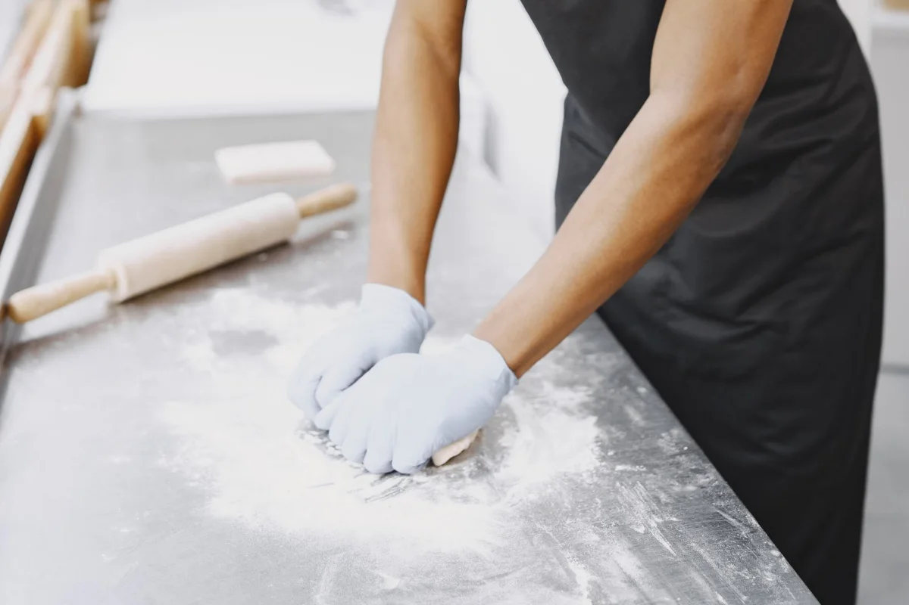
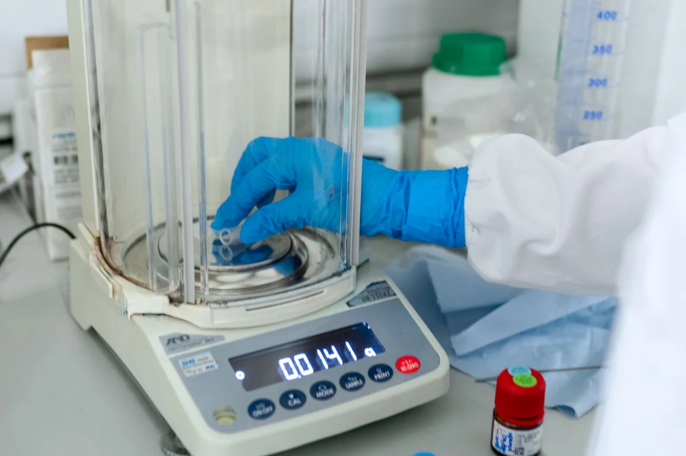

01Веб-присуство
Изработка на веб-страници
Современи, приспособливи и професионални веб-страници што му даваат на вашиот бизнис јасно и веродостојно онлајн присуство.
- Современ дизајн и корисничко искуство
- Дизајн за сите уреди
- Фокус на брзината
KIDEX нуди специјализирани консултантски услуги за целокупната технологија на преработка на пченица и производство на брашно, пекарски и кондиторски производи и тестенини.
Со 25 години искуство, KIDEX работи во преработката на пченица и производството на брашно, пекарски и кондиторски производи и тестенини, помагајќи им на производителите да ги претворат искуството и иновациите во успешни проекти.

Прецизно приспособување на состојките, процесите и рецептурите за висок квалитет, вкус и хранлива вредност на готовите пекарски производи, со зачувување на она што веќе функционира.

Создавање и лансирање нови производи според побарувачката на пазарот и потребите на потрошувачите — од почетен концепт до формулација подготвена за производство и лансирање.

KIDEX има стручни компетенции и технички вештини за користење лабораториска опрема за контрола на квалитетот на пченица, брашно, пекарски и кондиторски производи и тестенини.
Го разгледуваме постојниот производ или празнината на пазарот за да ги утврдиме можностите.
Работиме на состојките, процесот и формулацијата заедно со тимот на производителот.
Подобрена рецептура, нова формулација или процес подготвен за производната линија.
Секоја соработка со KIDEX поврзува силен концепт со резултат што тимот може да го повтори, измери и подобри.

KIDEX ги проширува своите консултантски услуги со дигитални решенија што им помагаат на бизнисите подобро да се претстават, полесно да бидат пронајдени и подобро да ги поддржат клиентите.
Современи, приспособливи и професионални веб-страници што му даваат на вашиот бизнис јасно и веродостојно онлајн присуство.
Физички картички со кои клиентите лесно ја отвораат вашата страница за Google рецензии и го споделуваат своето искуство.
Решенија со вештачка интелигенција што одговараат на чести прашања, споделуваат информации 24/7 и ја намалуваат повторливата работа во поддршката.
Подготвени сте за поефикасно дигитално присуство?
Истражете ги ИТ решенијата